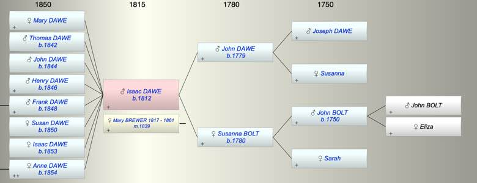

| [Index] |
| Isaac DAWE (1812 - ) |
|  |
| b. 1812 at SIlverton |
| m. 18 May 1839 Mary BREWER (1817 - 1861) at St George , Exeter |
| Near Relatives of Isaac DAWE (1812 - ) | ||||||
| Relationship | Person | Born | Birth Place | Died | Death Place | Age |
| Grandfather | Joseph DAWE | |||||
| Grandmother | Susanna | |||||
| Grandfather | John BOLT | 1750 | ||||
| Grandmother | Sarah | |||||
| Father in Law | William BREWER | 1779 | 1827 | Exminster | 48 | |
| Mother in Law | Anna Maria ADAMS | 1781 | Heavitree | 10 Aug 1840 | Heavitree | 59 |
| Father | John DAWE | abt 1779 | Oakhampton | |||
| Mother | Susanna BOLT | abt 1780 | ||||
| Self | Isaac DAWE | 1812 | SIlverton | |||
| Wife | Mary BREWER | 1817 | Exminster | 31 Dec 1861 | 44 | |
| Daughter | Mary DAWE | |||||
| Son | Thomas DAWE | 1842 | Exeter | |||
| Son | John DAWE | 1844 | Exeter | |||
| Son | Henry DAWE | 1846 | Exeter | |||
| Son | Frank DAWE | 1848 | Exeter | |||
| Daughter | Susan DAWE | 1850 | Broadclyst | |||
| Daughter | Isaac DAWE | 1853 | Broadcylst | |||
| Daughter | Anne DAWE | 1854 | Broadclyst | |||
| Son in Law | WIlliam HOBBS | |||||
| Daughter in Law | Elizabeth EVANS | |||||
| Daughter in Law | Eliza | |||||
| Son in Law | Richard MILBURN | 1845 | 1892 | 47 | ||
| Son in Law | David COWLEY | |||||
| Granddaughter | Alice DAWE | |||||
| Grandson | Arthur DAWE | |||||
| Granddaughter | Christina COWLEY | |||||
| Granddaughter | Elizabeth COWLEY | |||||
| Nephew | Frederick BREWER | 16 Sep 1822 | Exminster | 1822 | Exminster | 0 |
| Nephew | Frederck BREWER | 16 Sep 1823 | Exminster | 1909 | Croydon | 86 |
| Nephew | Frank BREWER | 22 Nov 1825 | Exminster | 04 Nov 1895 | Kingston On Thames | 69 |
| Nephew | Lewis BREWER | 13 Mar 1828 | Exminster | 1836 | Exminster | 8 |
| Niece | Ellen BREWER | 20 Apr 1830 | Exminster | 02 Apr 1861 | 30 | |
| Niece | Flora BREWER | 15 Dec 1832 | Exminster | Y | ||
| Niece | Ruth BREWER | 23 Apr 1835 | Exminster | Y | ||
| Nephew | Lewis BREWER | 1839 | Exminster | 31 Mar 1906 | Redbridge, Hampshire | 67 |
| Niece | Ann Maria LANGSFORD | 1824 | Alphington | 1900 | Croydon | 76 |
| Nephew | Edward BREWER | 03 Feb 1837 | 20 Jun 1868 | Alphington | 31 | |
| Niece | Ann BREWER | 03 Jan 1839 | Alphington | 25 Nov 1841 | Alphington | 2 |
| Nephew | James BREWER | 23 Oct 1842 | Alphington | 1885 | Alphington | 43 |
| Niece | Amelia BREWER | 27 Oct 1846 | 05 Nov 1871 | 25 | ||
| Nephew | Samuel BREWER | 1848 | Alphington | 1901 | Alphington | 53 |
| Niece | Charlotte BREWER | 26 Jul 1851 | Alphington | 1940 | Pinhoe | 89 |
| Niece | Jane BREWER | 03 Dec 1854 | Alphington | Y | ||
| Nephew | William BREWER | 03 Dec 1854 | Alphington | 07 Aug 1912 | 57 | |
| Niece | Francis BREWER | 1835 | Exminster | Y | ||
| Niece | Charles BREWER | 30 Apr 1841 | Exminster | |||
| Niece | Ann BREWER | 1844 | Alphington | Y | ||
| Nephew | Henry BREWER | 1846 | Alphington | Y | ||
| Niece | Rebecca BREWER | 1849 | Alphington | Y | ||
| Nephew | Andrew BREWER | 07 Jun 1850 | Alphington | 02 Jul 1931 | 81 | |
| Nephew | Samulel Watts BREWER | 29 Oct 1837 | Exminster | 1915 | 78 | |
| Niece | Patience BREWER | 1840 | Starcross | 1871 | 31 | |
| Niece | Harriet Watts BREWER | 1842 | Starcross | Y | ||
| Nephew | George BREWER | 1843 | Starcross | 1875 | 32 | |
| Niece | Mary Jane BREWER | 1845 | Starcross | 1845 | Starcross | 0 |
| Nephew | Albert BREWER | 1848 | Starcross | 1848 | Starcross | 0 |
| Niece | Ruth BREWER | 10 Dec 1849 | Starcross | 31 Mar 1921 | Newton Abbott | 71 |
| Nephew | Charles BREWER | 1851 | Starcross | |||
| Nephew | Daniel BREWER | 29 Mar 1853 | Teignmouth | |||
| Nephew | Solomon BREWER | 1855 | Teignmouth | |||
| Nephew | William Henry BREWER | 1857 | Teignmouth | |||
| Niece | Bertha BREWER | 1859 | Teignmouth | 06 Apr 1899 | Teignmouth | 40 |
| Niece | Blanche BREWER | 30 Jul 1860 | Teignmouth | 1916 | Australia | 56 |
| Niece | Alice LORAM | 1842 | Alphington | Y | ||
| Niece | Sarah LORAM | 1844 | Alphington | Y | ||
| Nephew | Thomas LORAM | 1845 | Alphington | Y | ||
| Nephew | William LORAM | 1846 | Alphington | 1891 | Alphington | 45 |
| Niece | Jane LORAM | 1848 | Alphington | 11 Nov 1906 | Alphington | 58 |
| Nephew | William Henry REEVE | 1837 | Heavitree | 1917 | 80 | |
| Niece | Elizabeth REEVE | 1839 | Heavitree/Wonford, Devon | 25 Jun 1911 | Bath | 72 |
| Niece | Alice Sarah HURLEY | 13 Nov 1853 | Alphington | 1939 | 86 | |
| Nephew | Alfred Robert HURLEY | 14 Aug 1859 | Alphington | 1935 | 76 | |
| Brother in Law | Thomas BREWER | 1801 | Heavitree | 07 Jan 1861 | 60 | |
| Sister in Law | Anna Maria BREWER | 06 Dec 1803 | Heavitree | 1888 | Lambeth | 85 |
| Brother in Law | William BREWER | 23 Jul 1806 | Heavitree | 23 Aug 1851 | 45 | |
| Brother in Law | James BREWER | 1807 | Exminster | 11 Apr 1881 | 4 Victoria Cottages, Parr St Exeter | 74 |
| Brother in Law | John C BREWER | 14 Jul 1811 | Exminster | 1889 | Petersfield | 78 |
| Brother in Law | Charles BREWER | 18 Mar 1813 | Exminster | 1894 | 81 | |
| Sister in Law | Sarah BREWER | 1815 | Exmouth? | 12 Mar 1852 | Alphington | 37 |
| Sister in Law | Selina BREWER | 1818 | Exminster | 1899 | 81 | |
| Sister in Law | Charlotte BREWER | 19 Aug 1820 | Exminster | 29 Oct 1883 | 63 | |
| Events in Isaac DAWE (1812 - )'s life | |||||
| Date | Age | Event | Place | Notes | Src |
| 1812 | Isaac DAWE was born | SIlverton | Note 1 | ||
| 18 May 1839 | 27 | Married Mary BREWER (aged 22) | St George , Exeter | Note 2 | |
| 1842 | 30 | Birth of son Thomas DAWE | Exeter | ||
| 1844 | 32 | Birth of son John DAWE | Exeter | ||
| 1846 | 34 | Birth of son Henry DAWE | Exeter | ||
| 1848 | 36 | Birth of son Frank DAWE | Exeter | ||
| 1850 | 38 | Birth of daughter Susan DAWE | Broadclyst | ||
| 1853 | 41 | Birth of daughter Isaac DAWE | Broadcylst | bap | |
| 1854 | 42 | Birth of daughter Anne DAWE | Broadclyst | bap 14 MAy 1854 Broadclyst | |
| 31 Dec 1861 | 49 | Death of wife Mary BREWER (aged 44) | ex James Brwer's bible | ||
| Note 1: ex 1851 census 1861 Oakhampton baptised 2 Feb 1812 Oakhampton son of John and |
| Note 2: Mary's father William, lime burner and Issac son of John Dawes coachman by banns (Whitestone) |
| Personal Notes: |
|
1871 census living Bedminster, Somerset aged 60 with a Norton Family
1881 census living Lyncombe and Widcombe aged 69 with his son in law WIllliam Hobbs who had married Isaac’s daughter Mary 1891aged 79 and living with his son Frank and Frank’s family in Bristol St George |
| Created on a Mac™ using iFamily for Mac™ on 15 Sep 2023 |